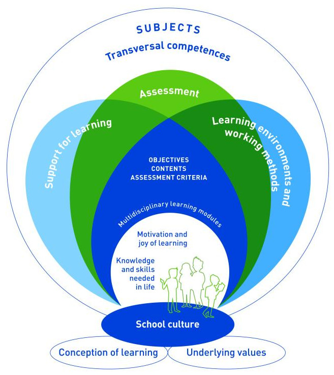

01
Curriculum Design
FNBE / OPH NATIONAL CORE CURRICULUM MODEL
CLICK TO ENLARGE ↗

National Core & Local Steering (FNBE, 2016)
The framework anchors subjects and transversal competences in school culture, underlying values, and multidisciplinary learning modules that link mathematics to real-world inquiry (Krzywacki et al., 2016).
PISA 2018 MATH ICC (BETWEEN-SCHOOL)
YARDIM ET AL., 2024
FINLAND
0.14 (0.06)
KOREA
0.27 (0.15)
SINGAPORE
0.29 (0.18)
PHILIPPINES
0.45 (0.23)
Unconditional ICC
Conditional ICC (in parentheses)
🇵🇭 PHILIPPINE CONTEXT
This model complements the decongested MATATAG K to 10 Mathematics Curriculum (DepEd, 2023) through multidisciplinary performance tasks that link mathematics to science and local community data while planning assessment alongside content.